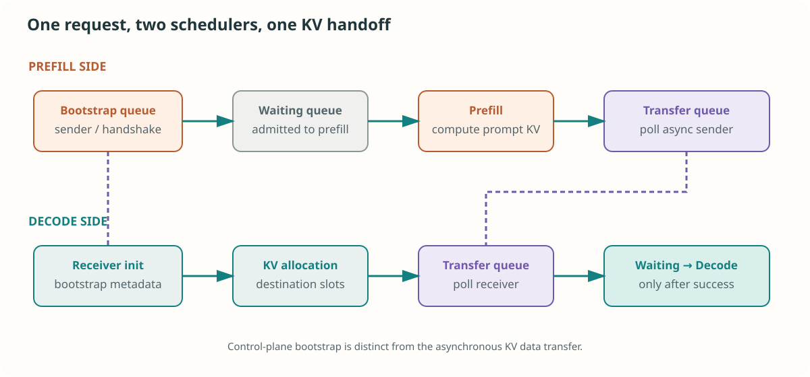
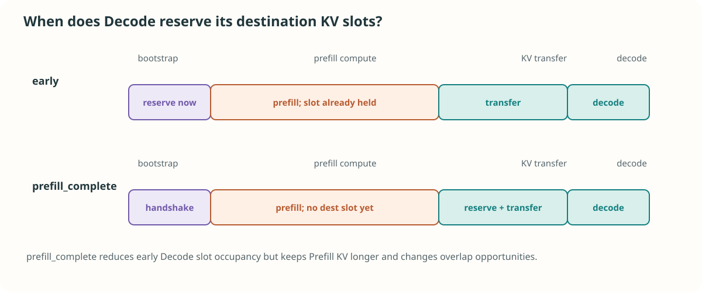

第 17 章 · PD 调度与传输
PD Disaggregation：Bootstrap、KV Reservation 与 Transfer State Machine
深入 Prefill/Decode 双侧状态机、bootstrap handshake、early 与 prefill_complete allocation、abort/retraction 和 timeout。
深入 Prefill/Decode 双侧状态机、bootstrap handshake、early 与 prefill_complete allocation、abort/retraction 和 timeout。 本章以 SGLang 固定 commit 为实现证据，把论文背景、当前运行时、教学模型和部署限制分开说明。
读完本章，你应该能
- 沿着真实控制流解释输入、状态、调度决策和输出。
- 识别资源限制、缓存命中与网络传输之间的权衡。
- 用 CPU toy 实验验证边界，而不把 toy 当成 GPU benchmark。
1. PD disaggregation 解决什么，又新增什么？
Prefill 更偏计算密集：一次处理完整输入并生成 prompt KV；Decode 每一步通常只处理少量新 token，却持续读取历史 KV，常受显存带宽和 KV 容量影响。统一 Engine 中，长 Prefill 可能打断 Decode batch；分离后可分别扩缩容、分别调度，但必须把 KV 从 Prefill worker 传给 Decode worker。
因此 PD 的收益不是“拆开就更快”，而是资源池化与干扰隔离能否抵消 KV transfer、bootstrap、网络拥塞、额外排队和控制面开销。
2. Prefill 与 Decode 两侧各自经历什么状态？

Prefill 侧会创建 sender，完成 bootstrap 后进入 waiting queue；完成 Prefill 后进入 transfer queue，并轮询异步 sender 状态。Decode 侧创建 receiver，执行握手，在目的 KV 可分配时初始化接收，再进入 transfer queue；传输成功后才进入等待生成的队列。
状态机的重要性在于：请求已经算完 Prefill，不代表 Decode 已经能生成；传输成功也不代表所有调度清理和缓存状态都已完成。
3. Bootstrap：先交换布局与地址，再传 KV
Bootstrap 不是把整块 KV 直接拷贝的动作，而是先建立一次请求级 transfer session。Decode 提供目的端 buffer 地址、拓扑和状态布局；Prefill 获取这些元数据后，sender 才能按 layer、rank、page/state layout 发起数据传输。不同 backend 可能用不同 transport engine，但需要兼容的模型结构和 rank layout。
在 Mooncake 路径中，SGLang 使用 bootstrap registry、transfer queues 与 sender/receiver 状态机；NIXL 也有自己的 peer registration、prepared transfer 与 completion polling。不要把 ZMQ/HTTP bootstrap 控制消息和 RDMA/NIXL 数据面混成同一条网络路径。
4. Early allocation：提前占用 Decode 端 KV slots
默认 early policy 会在 Prefill 完成前，为请求预留 Decode 端 destination KV slots。优点是 Prefill 一旦完成，transfer handshake 已经有目的空间，能够尽早开始搬运；缺点是长 Prefill 请求可能提前占着 Decode KV 容量，Decode 在等待数据时，slot 仍然被占用。
这个选择是在“提前预留空间”与“避免空等占用”之间折中。它改变的是每请求 destination slot 的 reservation 时机，不是 global KV pool 的总容量。
5. Prefill-complete：延后目的 KV reservation

设置 --disaggregation-decode-allocation-policy prefill_complete 时，Prefill 可以先计算，直到接受最终 Prefill result 才发送 readiness；Decode 收到信号后再 reserve destination slots，并启动既有 KV transfer handshake。它可能减少长 Prefill 对 Decode KV 空间的占用。
但 Prefill 端需要更久地保留 KV，且该路径会移除 chunked Prefill 与 KV transfer 的重叠机会。官方文档明确提醒：它不是通用吞吐优化，必须用自己的长短 prompt mix 和 KV pressure 对照 early。
6. Abort、Retraction 与 Bootstrap Room 复用
网络 transfer 可能失败、超时、被客户端取消，或在 Decode 端发生 retraction。系统需要协调 sender / receiver abort、transfer queue 清理、KV slot release、abort acknowledgement 和 room 状态。过早释放目的 slot 可能与仍在途的 DMA 写入竞争；因此失败恢复不是简单地把 request 从列表删除。
在当前实现中，成功 transfer 后 Prefill 清理 room readiness / transfer state，再通知 Decode success；retraction recovery 可复用 bootstrap room。失败和 cancellation records 仍有 timeout 生命周期。不同版本的 abort ACK 能力也可能不同，混合版本部署需要额外谨慎。
7. Timeout 从哪个事件开始计时？
Prefill 的 SGLANG_DISAGGREGATION_BOOTSTRAP_TIMEOUT 在最终 Prefill result 后启动，为 Decode admission 留出预算。Decode 的 SGLANG_DISAGGREGATION_WAITING_TIMEOUT 约束等待 Prefill 完成的时间，随后在 admission 和 destination indices 发送阶段按阶段重新计时。
prefill_complete 是有明确限制的初始实现：要求 Mooncake（RDMA 或 mooncake_tcp）、Python bootstrap registry，attention TP/CP 与 pipeline size 为 1；Attention DP 只在每个 DP rank 的 attention TP size 为 1 时允许。staging buffers、runtime role switching、encoder disaggregation、decoupled speculation、HiSparse、decode radix cache、decode HiCache 与非 DSA auxiliary pools 等组合不支持。Prefill HiCache 限于 L2 + write_back 且无 storage backend。
所有互通 worker 必须使用相同 revision 并在两侧启用同一 policy；不要先升级一半 worker 就单侧切换。
8. 端到端时延：传输不是免费的中间箭头
PD 请求的首 token 路径至少包括排队、Prefill、bootstrap/handshake、KV transfer 与 Decode admission。Decode 生成速度则还受 Decode worker 排队和 KV read bandwidth 影响。
这是用于拆分观测的教学分解，不代表每个阶段在所有实现里严格串行；实际有重叠时要按 trace 的 critical path 计算，不能简单相加所有 wall-clock span。
9. 交互：选择 destination allocation 时机
Decode KV reservation
early：bootstrap 阶段就预留 Decode slots；transfer 可在 Prefill 完成后尽早开始，但长 Prefill 可能持有空等 slot。
prefill_complete：Prefill 完成信号后 Decode 才分配 slots；减少 Decode 空等占用，但 Prefill KV 保留更久、chunked prefill 与 transfer 的 overlap 减少。
abort / retry：需要先协调 sender/receiver、在途写入和资源 release；状态清理完成后才能安全复用 room。
运行 pd_lifecycle.py，尝试在 handshake、Prefill complete、allocation 与 transfer 之间切换顺序。
10. 源码阅读路线
- PD Disaggregation docs：allocation policy、timeout、router 与限制。
- prefill.py：bootstrap queue、waiting queue、transfer queue。
- decode.py：receiver、destination allocation、transfer polling、retraction。
- common/conn.py：bootstrap registry、timeout、abort/ACK 与 transfer records。
- mooncake/conn.py 与 nixl/conn.py：backend-specific data plane。
11. 版本边界与实验清单
本章实现快照：sgl-project/sglang@ac0243723b0dcba177f8792979daaa2f8d6ee6ea。在生产环境启用 PD 前，必须核对 worker revision、model/TP/CP/PP layout、KV dtype/stride、transfer backend、network fabric、buffer policy 和 abort behavior。实验至少覆盖短/长 Prefill、不同 decode KV pressure、热/冷前缀、正常 transfer、timeout、client cancel、retraction 与 retry。
- SGLang PD disaggregation。
- Mooncake: A KVCache-centric Disaggregated Architecture for LLM Serving。
- llm-d PD disaggregation guide（用于比较 connector 概念，不代表 SGLang 的具体实现）。